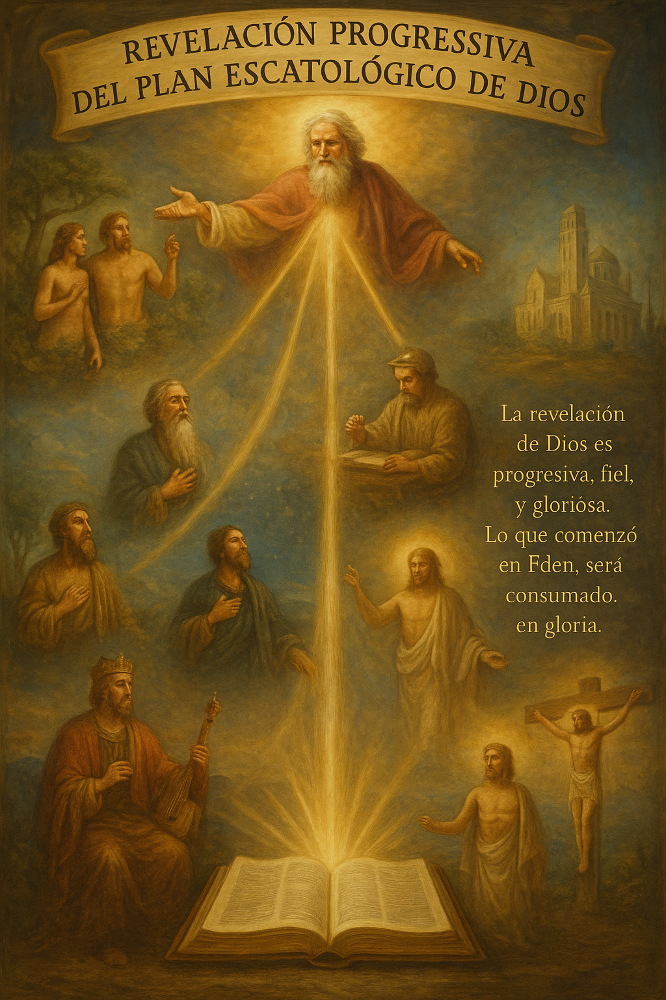

Introducción a la Base Profética
La profecía escatológica constituye aproximadamente un tercio de toda la Escritura, lo que revela la importancia que Dios mismo otorga a este tema. Lejos de ser un aspecto periférico de la revelación divina, la profecía del tiempo del fin es parte integral del mensaje bíblico, comenzando desde Génesis hasta Apocalipsis.
La base profética no es simplemente una colección de predicciones futuras, sino un marco teológico cohesivo que revela el plan de Dios para la redención final de su creación. A través de la profecía, Dios invita a sus hijos a comprender no solo lo que sucederá, sino el por qué de los eventos venideros y su propósito más amplio en la historia de la salvación.
Las cosas secretas pertenecen a Jehová nuestro Dios; mas las reveladas son para nosotros y para nuestros hijos para siempre, para que cumplamos todas las palabras de esta ley.
Deuteronomio 29:29
Es crucial entender que Dios ha revelado aspectos específicos del futuro no para satisfacer nuestra curiosidad, sino para prepararnos, equiparnos y motivarnos a vivir fielmente en el presente. La profecía bíblica siempre tiene un propósito práctico y espiritual, llamándonos a una mayor santidad, vigilancia y esperanza.
La Naturaleza de la Profecía Bíblica
A diferencia de las predicciones humanas o los presagios paganos, la profecía bíblica tiene características distintivas que confirman su origen divino:
Características de la Profecía Bíblica
- Precisión histórica: Las profecías bíblicas cumplidas demuestran una exactitud sobrenatural que excede cualquier posibilidad de conjetura humana.
- Consistencia interna: A pesar de abarcar más de 1,500 años y docenas de autores humanos, las profecías bíblicas mantienen una coherencia teológica notable.
- Propósito redentor: Las profecías siempre apuntan hacia el plan redentor de Dios, no simplemente predicen eventos futuros como fin en sí mismos.
- Naturaleza progresiva: La revelación profética es progresiva, con detalles que se despliegan y se clarifican a lo largo del tiempo.
- Enfoque cristocéntrico: Todas las profecías escatológicas, directa o indirectamente, apuntan hacia Cristo y su obra de redención.
La Escritura misma enfatiza el origen divino de la profecía y advierte contra las falsas profecías:
"Pero ante todo, entended que ninguna profecía de la Escritura es de interpretación privada, porque nunca la profecía fue traída por voluntad humana, sino que los santos hombres de Dios hablaron siendo inspirados por el Espíritu Santo."
La Revelación Profética Progresiva
Dios ha revelado su plan escatológico de manera progresiva a lo largo de la historia bíblica. Cada revelación posterior amplía, clarifica y profundiza las revelaciones anteriores, nunca contradiciendo lo que fue revelado antes, sino expandiendo nuestra comprensión del plan divino.

La revelación escatológica progresiva desde Génesis hasta Apocalipsis
Esta progresión puede verse en varios temas clave:
1. La Promesa Mesiánica
La primera profecía escatológica aparece en Génesis 3:15, donde Dios promete que la simiente de la mujer heriría la cabeza de la serpiente. Esta profecía proto-evangélica, aunque vaga en su forma inicial, establece el conflicto cósmico que define toda la historia humana. A lo largo del Antiguo Testamento, esta promesa se desarrolla:
- El Mesías vendría de la línea de Abraham (Génesis 12:3)
- Vendría de la tribu de Judá (Génesis 49:10)
- Sería un descendiente de David (2 Samuel 7:12-16)
- Nacería en Belén (Miqueas 5:2)
- Sufriría vicariamente (Isaías 53)
- Sería resucitado (Salmo 16:10)
- Establecería un reino eterno (Daniel 7:13-14)
2. Los Días Postreros
La concepción de los "días postreros" o "últimos días" también sigue un desarrollo progresivo:
- En las profecías iniciales, está vinculado principalmente a la venida del Mesías y la restauración de Israel
- Los profetas posteriores expanden este concepto para incluir juicio sobre las naciones y la renovación cósmica
- Daniel introduce la estructura temporal específica relacionada con imperios mundiales sucesivos
- El Nuevo Testamento revela que los "últimos días" comenzaron con la primera venida de Cristo y culminarán con su regreso glorioso
"Dios, habiendo hablado muchas veces y de muchas maneras en otro tiempo a los padres por los profetas, en estos postreros días nos ha hablado por el Hijo, a quien constituyó heredero de todo, y por quien asimismo hizo el universo."
Esta revelación progresiva nos enseña que debemos interpretar las profecías anteriores a la luz de las revelaciones posteriores, especialmente aquellas dadas en el Nuevo Testamento.
Principales Libros Proféticos Escatológicos
En el Antiguo Testamento
Daniel - El libro de Daniel ocupa un lugar preeminente en la escatología bíblica, proporcionando un marco cronológico para los eventos del fin de los tiempos:
- La visión de la estatua (Daniel 2) revela cuatro imperios mundiales sucesivos
- Las cuatro bestias (Daniel 7) corresponden a estos imperios y añaden detalles sobre el "cuerno pequeño"
- La profecía de las setenta semanas (Daniel 9) proporciona un cronograma desde la reconstrucción de Jerusalén hasta la venida del Mesías
- Las visiones de los capítulos 10-12 detallan eventos que precederán y acompañarán al "tiempo del fin"
Ezequiel - Contiene profecías cruciales sobre:
- La restauración futura de Israel (capítulos 36-37)
- La invasión de Gog y Magog (capítulos 38-39)
- El templo milenial y la distribución de la tierra en el reino mesiánico (capítulos 40-48)
Isaías, Jeremías, Zacarías - Estos profetas proporcionan detalles adicionales sobre:
- El reino mesiánico (Isaías 2, 11, 65-66)
- El Nuevo Pacto (Jeremías 31)
- La Segunda Venida (Zacarías 14)
En el Nuevo Testamento
Apocalipsis - La revelación culminante de la escatología bíblica:
- Integra y expande las profecías anteriores
- Revela la secuencia detallada de eventos durante la Tribulación (capítulos 6-19)
- Describe la Segunda Venida de Cristo (capítulo 19)
- Proporciona información sobre el Milenio (capítulo 20)
- Culmina con la descripción del estado eterno (capítulos 21-22)
Discurso del Monte de los Olivos (Mateo 24-25, Marcos 13, Lucas 21) - Las enseñanzas escatológicas más extensas de Jesús:
- Señales del fin de los tiempos
- La Gran Tribulación
- La Segunda Venida
- Parábolas sobre la vigilancia y preparación
Epístolas Paulinas (1 y 2 Tesalonicenses, 1 Corintios 15) - Aportan detalles sobre:
- El Rapto de la Iglesia
- El Anticristo y la apostasía
- La resurrección de los muertos
"Y ahora, hijitos, permaneced en él, para que cuando se manifieste, tengamos confianza, y no seamos avergonzados delante de él en su venida."
1 Juan 2:28Principios de Interpretación Profética
La interpretación correcta de la profecía escatológica requiere adherirse a principios hermenéuticos sólidos:
1. Interpretación Literal-Gramatical-Histórica
Las profecías deben interpretarse según el sentido normal de las palabras, considerando el contexto gramatical e histórico. Aunque la profecía utiliza símbolos, estos tienen significados definidos que deben discernirse a partir del uso bíblico, no de especulaciones arbitrarias.
Cuando el sentido llano del texto tiene sentido, no busques otro sentido. Cuando una interpretación literal es posible, nunca tomes la profecía alegóricamente.
Dr. David L. Cooper
2. Interpretación Comparativa
Las profecías nunca existen aisladamente; deben interpretarse a la luz de otras Escrituras. La Biblia interpreta a la Biblia, y las oscuridades se aclaran mediante pasajes más explícitos.
Ejemplos de Interpretación Comparativa
- Las "bestias" de Daniel 7 se explican parcialmente en el mismo capítulo (7:17-27)
- Apocalipsis 17:7-18 interpreta los símbolos de la mujer y la bestia
- La "abominación desoladora" de Daniel es interpretada por Jesús en Mateo 24:15
- Las setenta semanas de Daniel (9:24-27) iluminan la cronología de Apocalipsis
3. Interpretación Cristocéntrica
Toda profecía escatológica debe entenderse en relación con Cristo y su obra redentora. Jesús mismo afirmó que las Escrituras dan testimonio de Él (Juan 5:39), y la revelación de Apocalipsis es específicamente "la revelación de Jesucristo" (Apocalipsis 1:1).
4. Equilibrio entre Continuidad y Discontinuidad
Las profecías del Antiguo Testamento deben interpretarse reconociendo tanto:
- La continuidad con la revelación del Nuevo Testamento (Dios tiene un solo plan redentor)
- La discontinuidad introducida por la cruz y la era de la Iglesia (algunos aspectos se cumplen de maneras no previstas por los profetas del AT)
El Propósito de la Profecía Escatológica
Dios no ha revelado el futuro simplemente para satisfacer nuestra curiosidad, sino para lograr propósitos específicos en la vida de los creyentes:
1. Fortalecer la Fe
El cumplimiento de profecías previas confirma la veracidad de la Palabra de Dios y fortalece nuestra confianza en las profecías aún no cumplidas.
"Y ahora os lo he dicho antes que suceda, para que cuando suceda, creáis."
2. Motivar la Santidad
La perspectiva del regreso inminente de Cristo y el juicio venidero nos motiva a vivir vidas santas y diligentes.
"Puesto que todas estas cosas han de ser deshechas, ¡cómo no debéis vosotros andar en santa y piadosa manera de vivir, esperando y apresurándoos para la venida del día de Dios...!"
3. Proporcionar Esperanza
En tiempos de sufrimiento y persecución, la certeza del triunfo final de Cristo y la recompensa eterna proporciona consuelo y esperanza.
"Por tanto, consolaos unos a otros con estas palabras."
4. Promover la Evangelización
La realidad del juicio venidero y la brevedad del tiempo actual nos impulsa a proclamar el evangelio con urgencia.
"Así que, somos embajadores en nombre de Cristo, como si Dios rogase por medio de nosotros; os rogamos en nombre de Cristo: Reconciliaos con Dios."
5. Preparar a la Iglesia
La profecía escatológica prepara a la Iglesia para las pruebas venideras y para su papel en el plan divino.
"Bienaventurado el que lee, y los que oyen las palabras de esta profecía, y guardan las cosas en ella escritas; porque el tiempo está cerca."
Conclusión: La Relevancia Actual de la Base Profética
La base profética de la escatología bíblica no es un ejercicio académico estéril, sino una revelación viva y relevante para la Iglesia de hoy. A medida que observamos los eventos mundiales contemporáneos, podemos discernir que el escenario global está siendo preparado para el cumplimiento de las profecías finales.
Sin embargo, debemos equilibrar:
- Un estudio diligente de la profecía, reconociendo su importancia en el consejo divino
- Una humildad adecuada, reconociendo que "vemos por espejo, oscuramente" (1 Corintios 13:12)
- Un énfasis en las aplicaciones prácticas y espirituales de la profecía, no solo en sus aspectos predictivos
El apóstol Pedro nos proporciona quizás el resumen más conciso de la respuesta apropiada a la revelación profética:
"Por lo cual, oh amados, estando en espera de estas cosas, procurad con diligencia ser hallados por él sin mancha e irreprensibles, en paz."
La base profética de la escatología bíblica, correctamente entendida, no nos lleva a la especulación ociosa o al miedo paralizante, sino a una fe vibrante, una esperanza inquebrantable y un amor activo mientras esperamos el glorioso regreso de nuestro Señor Jesucristo.